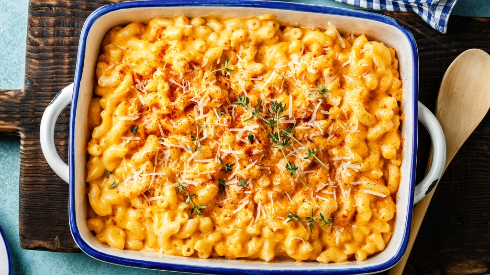

Macaroni and cheese

Description
This a baked macaroni and cheese recipe,one of the best in my opinion dishes i have ever eating to be honest.This is oven baked and not the traditional box or retail macaroni and cheese dishes
Ingredients
- 1 pound elbow macaroni
- 4 pounds cheddar cheese,grated
- 1 ½ cups milk
- 5 eggs, or more to taste
- 1 tablespoon yellow mustard
- ground black pepper to taste
Steps
- Preheat oven to 300 degrees F (150 degrees C).
- Bring a large pot of lightly salted water to a boil. Cook elbow macaroni in the boiling water, stirring occasionally until tender yet firm to the bite, 8 minutes. Drain.
- Layer some of the macaroni in a 5-quart baking dish; top with a layer of Cheddar cheese. Continue layering macaroni and Cheddar cheese into the dish, ending with a Cheddar cheese layer.
- Beat milk, eggs, and mustard together in a bowl; pour over macaroni mixture, ensuring milk mixture gets to all of the macaroni.
- Bake in the preheated oven until cheese is melted and just before cheese around the sides gets crisp, 20 to 25 minutes. Season with black pepper.